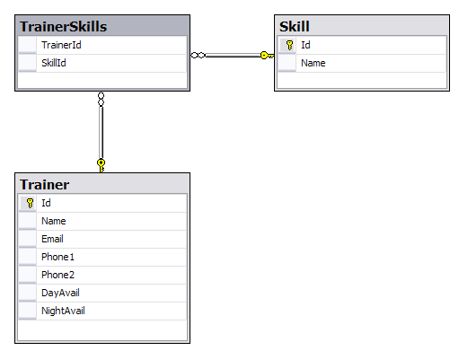

September 30, 2014
Joseph Sheedy
joseph.sheedy@gmail.com
Git repository: https://github.com/UWPCE-PythonCert/SystemDevelopment2015
This list is far from exhaustive
http://en.wikipedia.org/wiki/List_of_relational_database_management_systems
Here is an example table which represents people in a system:
+----+------------+------------+-----------+ | id | username | first_name | last_name | +====+============+============+===========+ | 1 | wont_u_b | Fred | Rogers | +----+------------+------------+-----------+ | 4 | neuroman | William | Gibson | +----+------------+------------+-----------+ | 5 | race | Roger | Bannon | +----+------------+------------+-----------+
There are three basic types of relationships:
The many table has a column which holds the primary key of the row from the one table:
Consider the relationship of books to author:
+----+-----------+------------+-----------+
| id | username | first_name | last_name |
+====+===========+============+===========+
| 4 | neuroman | William | Gibson |
+----+-----------+------------+-----------+
| 6 | harrywho | Harry | Houdini |
+----+-----------+------------+-----------++----+-----------------------------------+--------+
| id | title | author |
+====+===================================+========+
| 1 | Miracle Mongers and their Methods | 6 |
+----+-----------------------------------+--------+
| 2 | The Right Way to Do Wrong | 6 |
+----+-----------------------------------+--------+
| 3 | Pattern Recognition | 4 |
+----+-----------------------------------+--------+One-to-one relationships are a special case of Many-to-one
In this case, the column on the related table which holds the primary key of the target table has an additional unique constraint, so that only one related record can exist
Can be used for data that doesn't need to be accessed often and is unique per record
Consider the example of birth records:
+----+-----------+------------+-----------+
| id | username | first_name | last_name |
+====+===========+============+===========+
| 1 | wont_u_b | Fred | Rogers |
+----+-----------+------------+-----------+
| 4 | neuroman | William | Gibson |
+----+-----------+------------+-----------+
| 5 | race | Roger | Bannon |
+----+-----------+------------+-----------++----+--------+----------------+--------------+
| id | person | date | place |
+====+========+================+==============+
| 1 | 1 | March 20, 1928 | Latrobe, PA |
+----+--------+----------------+--------------+
| 2 | 4 | March 17, 1948 | Conway, SC |
+----+--------+----------------+--------------+
| 3 | 5 | April 1, 1954 | Wilmette, IL |
+----+--------+----------------+--------------+You can't have a multi-valued field in traditional SQL, so there's no way to define a foreign key-like construct
Instead, this relationship is modelled using a join table. This is just a regular table which has twoforeign key fields, one for each side of the relation
Beyond these two, other columns can add data points describing the qualities of the relation itself
+----+------------+------------+-----------+
| id | username | first_name | last_name |
+====+============+============+===========+
| 7 | whitequeen | Emma | Frost |
+----+------------+------------+-----------+
| 8 | shadowcat | Kitty | Pryde |
+----+------------+------------+-----------++----+---------------+
| id | name |
+====+===============+
| 1 | Hellfire Club |
+----+---------------+
| 2 | X-Men |
+----+---------------++----+--------+-------+--------+
| id | person | group | active |
+====+========+=======+========+
| 1 | 7 | 1 | False |
+----+--------+-------+--------+
| 2 | 7 | 2 | True |
+----+--------+-------+--------+
| 3 | 8 | 2 | True |
+----+--------+-------+--------+The syntax of SQL can be broken into constructs:

SQL statements belong to one of several subsets
Statements in this subset concern the structure of the database itself:
CREATE TABLE "groups" (
"group_id" character varying(32) NOT NULL,
"name" character varying(255) NOT NULL,
"description" text NOT NULL
)DROP TABLE groups;
Statements in this subset concern the altering of data within the database:
UPDATE people
SET first_name='Bill'
WHERE id=4;DELETE FROM people
WHERE id=4;
Statements in this subset concern the retrieval of data from within the database:
SELECT user_id, COUNT(*) c
FROM (SELECT setting_value AS interests, user_id
FROM user_settings
WHERE setting_name = 'interests') raw_uid
GROUP BY user_id HAVING c > 1;Despite the SQL's standardization, individual databases have lots of differences
Programmers don't want to have to think about implementation details for underlying systems
It would be nice to have a single API to hide these details
Any package implementing this API would then be interchangeable
Finalized in 1996, PEP 248 specified DB-API version 1.0 to fulfill this goal:
This API has been defined to encourage similarity between the Python modules that are used to access databases. By doing this, we hope to achieve a consistency leading to more easily understood modules, code that is generally more portable across databases, and a broader reach of database connectivity from Python.http://www.python.org/dev/peps/pep-0248/
By 2001, PEP 249 brought version 2.0 of the DB-API specification, with improvements:
Discussions are currently underway to push DB-API v3.0, particularly in light of the change to Python 3.0 http://www.python.org/dev/peps/pep-0249/
It is important to remember that PEP 249 is only a specification
There is no code or package for DB-API 2.0 on it's own.
Since 2.5, the Python Standard Library has provided a reference implementation of the api http://docs.python.org/2/library/sqlite3.html based on SQLite3
Before version 2.5, this package was available as pysqlite
To use the DB API with any database other than SQLite3, you must have an underlying API package available.
Implementations are available for:
Common db api packages can be installed using pip
$ pip install psycopg2
$ pip install mysql-python
...Most api packages will require that the development headers for the underlying database system be available. Without these, the C symbols required for communication with the db are not present and the python interface cannot work.
Some of the db api wrappers have special installation requirements:
The MS SQL package runs only on Windows and requires pywin32. It is included in versions of pywin32 since v211.
The cx_Oracle package has binary installers, or can be installed from source using distutils:
$ python setup.py build
$ python setup.py installDB-API2 implementations provide the following global values:
These can be used to tailor your program's expectations
DB API provides a constructor, connect(), which returns a Connection object:
connect(parameters)This can be considered the entry point for the module. Once you've got a connection, everything else flows from there.
The parameters required and accepted by the connect constructor will vary from implementation to implementation, since they are specific to the underlying database.
In SQLite, just pass connect() a string containing a filename in which to open or create your database. Use ":memory:" to create an in-memory database.
Some methods may not be supported by all implementations:
You can use a few values to control the rows returned by the cursor:
The final two methods may be implemented as no-ops
The cursor is used to run operations on the database:
cursor.execute("SELECT id, value FROM foo WHERE id > ?", 5)cursor.executemany("INSERT INTO foo(id, value) VALUES (?, ?)", ((1,2.0), (2,5.5)))You can do all work on the data without using placeholders by constructing the entire query by hand:
# don't do this!
query = "SELECT * from books where author_id = " + user_input_author
In addition to being inefficient, this leaves you open to SQL injection attack. The placeholder mechanism will do the proper quoting and escaping to prevent abuse
See examples/SQL/placeholders.py and examples/SQL/litte_bobby_tables.py
These attributes of Cursor can help you learn about the results of operations:
These methods are the way to get results after an operation:
>>> cursor.execute('SELECT * FROM stocks ORDER BY price')
>>> for row in cursor:
print row
(u'2006-01-05', u'BUY', u'RHAT', 100, 35.14)
(u'2006-03-28', u'BUY', u'IBM', 1000, 45.0)
(u'2006-04-06', u'SELL', u'IBM', 500, 53.0)
(u'2006-04-05', u'BUY', u'MSFT', 1000, 72.0)Note that each of these methods will raise a DB API Error if no operation has been performed (or if no result set was produced)
SQL NULL values are represented by Python's None
However, sqlite3 has a 'more general dynamic type system' and does not implement these.
psycopg2 does.
The DB-API provides types and constructors for data:
Each of the above has a corresponding *FromTicks(ticks) method which returns the same type given a single integer argument (seconds since the epoch)
The DB API specification requires implementations to create the following hierarchy of custom Exception classes:
StandardError
|__Warning
|__Error
|__InterfaceError (a problem with the db api)
|__DatabaseError (a problem with the database)
|__DataError (bad data, values out of range, etc.)
|__OperationalError (the db has an issue out of our control)
|__IntegrityError
|__InternalError
|__ProgrammingError (something wrong with the operation)
|__NotSupportedError (the operation is not supported)
There are significant differences in exception handling across implementations, see examples/SQL/sqlite3_psycopg2_exceptions.py
Aside from some custom extensions not required by the specification, that's it.
So how do you interact with this?
Start by moving to the examples folder, opening a Python interpreter and importing the sqlite3 module:
$ cd examples
$ python
Python 2.7.1 (r271:86832, Apr 4 2011, 22:22:40)
[GCC 4.2.1 (Apple Inc. build 5664)] on darwin
Type "help", "copyright", "credits" or "license" for more information.
>>> import sqlite3We can poke the module a bit to learn about it:
>>> sqlite3.sqlite_version
'3.6.12'
>>> sqlite3.apilevel
'2.0'
>>> sqlite3.paramstyle
'qmark'
>>> sqlite3.threadsafety
1
===== =====================================
level meaning
===== =====================================
0 Not safe
1 Safe at Module level only
2 Safe at Module and Connection
3 Safe at Module, Connection and Cursor
===== =====================================SQLite3 is a file-based system, and it will create the file it needs if one doesn't exist. We can create a sqlite3 database just by attempting to connect to it:
>>> import createdb
>>> createdb.main()
Need to create database and schema
>>> reload(createdb)
>>> createdb.main()
Database exists, assume schema does, too. Let's see how this works
Open createdb.py in your editor:
import os
import sqlite3
DB_FILENAME = 'books.db'
DB_IS_NEW = not os.path.exists(DB_FILENAME)
def main():
conn = sqlite3.connect(DB_FILENAME)
if DB_IS_NEW:
print 'Need to create database and schema'
else:
print 'Database exists, assume schema does, too.'
conn.close()
if __name__ == '__main__':
main()Make the following changes to createdb.py:
import os
import sqlite3
DB_FILENAME = 'books.db'
SCHEMA_FILENAME = 'ddl.sql' # this is new
DB_IS_NEW = not os.path.exists(DB_FILENAME)
def main():
with sqlite3.connect(DB_FILENAME) as conn:
if DB_IS_NEW: # A whole new if clause:
print 'Creating schema'
with open(SCHEMA_FILENAME, 'rt') as f:
schema = f.read()
conn.executescript(schema)
else:
print 'Database exists, assume schema does, too.'
# delete the conn.close() that was here.Quit your python interpreter and delete the file books.db that should be in the examples folder
Then run the script from the command line to try it out:
$ python createdb.py
Creating schema
$ python createdb.py
Database exists, assume schema does, too.Add the following to createdb.py:
# in the imports, add this line:
from utils import show_table_metadata# in the else clause, replace the print statement with this:
print "Database exists, introspecting:"
tablenames = ['author', 'book']
cursor = conn.cursor()
for name in tablenames:
print "\n"
show_table_metadata(cursor, name)Then try running python createdb.py again
$ python createdb.py
Table Metadata for 'author':
cid | name | type | notnull | dflt_value | pk |
----+------------+------------+------------+------------+----+-
0 | authorid | INTEGER | 1 | None | 1 |
----+------------+------------+------------+------------+----+-
1 | name | TEXT | 0 | None | 0 |
----+------------+------------+------------+------------+----+-
Table Metadata for 'book':
cid | name | type | notnull | dflt_value | pk |
----+------------+------------+------------+------------+----+-
0 | bookid | INTEGER | 1 | None | 1 |
----+------------+------------+------------+------------+----+-
1 | title | TEXT | 0 | None | 0 |
----+------------+------------+------------+------------+----+-
2 | author | INTEGER | 1 | None | 0 |
----+------------+------------+------------+------------+----+-Let's load some data. Enter into the Python shell:
import sqlite3
insert = """INSERT INTO author (name) VALUES("Iain M. Banks");"""
with sqlite3.connect("books.db") as conn:
cur = conn.cursor()
cur.execute(insert)
cur.rowcount
cur.close()Did that work?
Let's query our database to find out:
query = """SELECT * from author;"""
with sqlite3.connect("books.db") as conn:
cur = conn.cursor()
cur.execute(query)
for row in cur:
print row
(1, u'Iain M. Banks')Data made it in, let's make the code more efficient.
Queries can be parameterized. The parameter style is database dependent, and can be determined from module.paramstyle
http://www.python.org/dev/peps/pep-0249/#paramstyle
insert = """INSERT INTO author (name) VALUES(?);"""
authors = [["China Mieville"], ["Frank Herbert"], ["J.R.R. Tolkien"], ["Susan Cooper"], ["Madeline L'Engle"]]
with sqlite3.connect("books.db") as conn:
cur = conn.cursor()
cur.executemany(insert, authors)
print cur.rowcount
cur.close()Again, query the database:
query = """SELECT * from author;"""
with sqlite3.connect("books.db") as conn:
cur = conn.cursor()
cur.execute(query)
rows = cur.fetchall()
for row in rows:
print rowTransactions let you group a number of operations together, allowing you to make sure they worked before you actually push the results into the database.
In SQLite3, operations that belong to the Data Manipulation subset (INSERT, UPDATE, DELETE) require an explicit commit unless auto-commit has been enabled.
So far, commits have been hidden from us by the with statement. The context manager takes care of committing when the context closes (at the end of the with statement)
Let's add some code so we can see the effect of transactions.
Let's start by seeing what happens when you try to look for newly added data before the insert transaction is committed.
Begin by quitting your interpreter and deleting books.db.
Then re-create the database, empty:
$ python createdb.py
Creating schemaIn populatedb.py, look at this code at the end of the file:
with sqlite3.connect(DB_FILENAME) as conn1:
print "\nOn conn1, before insert:"
show_authors(conn1)
authors = ([author] for author in AUTHORS_BOOKS.keys())
cur = conn1.cursor()
cur.executemany(author_insert, authors)
print "\nOn conn1, after insert:"
show_authors(conn1)
with sqlite3.connect(DB_FILENAME) as conn2:
print "\nOn conn2, before commit:"
show_authors(conn2)
conn1.commit()
print "\nOn conn2, after commit:"
show_authors(conn2)Quit your python interpreter and run the populatedb.py script:
$ python populatedb.py
On conn1, before insert:
no rows returned
On conn1, after insert:
(1, u'China Mieville')
(2, u'Frank Herbert')
(3, u'Susan Cooper')
(4, u'J.R.R. Tolkien')
(5, u"Madeline L'Engle")
On conn2, before commit:
no rows returned
On conn2, after commit:
(1, u'China Mieville')
(2, u'Frank Herbert')
(3, u'Susan Cooper')
(4, u'J.R.R. Tolkien')
(5, u"Madeline L'Engle")That's all well and good, but what happens if an error occurs?
Transactions can be rolled back in order to wipe out partially completed work.
Like with commit, using connect as a context manager in a with statement will automatically rollback for exceptions.
Let's rewrite our populatedb script so it explicitly commits or rolls back a transaction depending on exceptions occurring
First, add the following function above the if __name__ == '__main__' block:
def populate_db(conn):
authors = ([author] for author in AUTHORS_BOOKS.keys())
cur = conn.cursor()
cur.executemany(author_insert, authors)
for author in AUTHORS_BOOKS.keys():
params = ([book, author] for book in AUTHORS_BOOKS[author])
cur.executemany(book_insert, params)Then, in the runner:
with sqlite3.connect(DB_FILENAME) as conn1:
with sqlite3.connect(DB_FILENAME) as conn2:
try:
populate_db(conn1)
print "\nauthors and books on conn2 before commit:"
show_authors(conn2)
show_books(conn2)
except Exception:
conn1.rollback()
print "\nauthors and books on conn2 after rollback:"
show_authors(conn2)
show_books(conn2)
raise
else:
conn1.commit()
print "\nauthors and books on conn2 after commit:"
show_authors(conn2)
show_books(conn2)
Remove books.db, recreate the database, then run our script:
$ rm books.db
$ python createdb.py
Creating schema
$ python populatedb.py
authors and books on conn2 after rollback:
no rows returned
no rows returned
Traceback (most recent call last):
File "populatedb.py", line 57, in
populate_db(conn1)
File "populatedb.py", line 46, in populate_db
cur.executemany(book_insert, params)
sqlite3.InterfaceError: Error binding parameter 0 - probably unsupported type.
Okay, we got an error, and the transaction was rolled back correctly.
Open utils.py and find this:
'Susan Cooper': ["The Dark is Rising", ["The Greenwitch"]],
Fix it like so:
'Susan Cooper': ["The Dark is Rising", "The Greenwitch"],
It appears that we were attempting to bind a list as a parameter. Ooops.
Now that the error in our data is repaired, let's try again:
$ python populatedb.py
Reporting authors and books on conn2 before commit:
no rows returned
no rows returned
Reporting authors and books on conn2 after commit:
(1, u'China Mieville')
(2, u'Frank Herbert')
(3, u'Susan Cooper')
(4, u'J.R.R. Tolkien')
(5, u"Madeline L'Engle")
(1, u'Perdido Street Station', 1)
(2, u'The Scar', 1)
(3, u'King Rat', 1)
(4, u'Dune', 2)
(5, u"Hellstrom's Hive", 2)
(6, u'The Dark is Rising', 3)
(7, u'The Greenwitch', 3)
(8, u'The Hobbit', 4)
(9, u'The Silmarillion', 4)
(10, u'A Wrinkle in Time', 5)
(11, u'A Swiftly Tilting Planet', 5)
So far, our transactions have been managed. Either explicitly by us, or automatically by the context manager statement with
This behavior is the result of an aspect of the database connection called the isolation level. There are three isolation levels available:
The default level is DEFERRED
The isolation level of a connection can be set with a keyword argument provided to the connect constructor:
con = sqlite3.connect('mydb.db', isolation_level="EXCLUSIVE")If you explicitly set this argument to None, you can enable autocommit behavior.
If autocommit is enabled, then any DML operations that occur on a connection will be immediately committed
First, edit populatedb.py:
with sqlite3.connect(DB_FILENAME, isolation_level=None) as conn1:
with sqlite3.connect(DB_FILENAME, isolation_level=None) as conn2:Next, undo your changes to utils.py so that the error we had will happen again
Finally, delete books.db, recreate it and test the populate script::
$ rm books.db
$ python createdb.py
Creating schema
$ python populatedb.pyauthors and books on conn2 after rollback:
(1, u'China Mieville')
(2, u'Frank Herbert')
(3, u'Susan Cooper')
(4, u'J.R.R. Tolkien')
(5, u"Madeline L'Engle")
(1, u'Perdido Street Station', 1)
(2, u'The Scar', 1)
(3, u'King Rat', 1)
(4, u'Dune', 2)
(5, u"Hellstrom's Hive", 2)
(6, u'The Dark is Rising', 3)
Traceback (most recent call last):
File "populatedb.py", line 57, in
populate_db(conn1)
File "populatedb.py", line 46, in populate_db
cur.executemany(book_insert, params)
sqlite3.InterfaceError: Error binding parameter 0 - probably unsupported type. There's not a whole lot of difference between the default "DEFERRED" isolation level and "IMMEDIATE"
There's quite a large difference, though for the "EXCLUSIVE" level.
Open threaded.py in your editors.
This is an example of using our existing database population setup in a threaded environment. One thread will load the database, the other will read it.
Take a few moments to review the control flow here. What should happen?
First, re-fix the bug in our utils.py file so that we don't get errors when running this test.
Then kill the old database, recreate it, and run our new script:
$ rm books.db
$ python createdb.py
Creating schema
$ python threaded.py2013-04-30 15:37:37,556 (Writer ) connecting
2013-04-30 15:37:37,556 (Reader ) waiting to sync
2013-04-30 15:37:37,556 (Writer ) connected
2013-04-30 15:37:37,557 (Writer ) changes made
2013-04-30 15:37:37,557 (Writer ) waiting to sync
2013-04-30 15:37:39,556 (MainThread) sending sync event
2013-04-30 15:37:39,557 (Reader ) beginning read
2013-04-30 15:37:39,557 (Reader ) beginning read
2013-04-30 15:37:39,557 (Writer ) PAUSING
2013-04-30 15:37:42,559 (Writer ) CHANGES COMMITTED
2013-04-30 15:37:42,590 (Reader ) selects issued
(1, u'China Mieville')
(2, u'Frank Herbert')
(3, u'Susan Cooper')
(4, u'J.R.R. Tolkien')
(5, u"Madeline L'Engle")
2013-04-30 15:37:42,590 (Reader ) results fetched
2013-04-30 15:37:42,590 (Reader ) beginning read
2013-04-30 15:37:42,590 (Reader ) selects issued
(1, u'Perdido Street Station', 1)
(2, u'The Scar', 1)
(3, u'King Rat', 1)
(4, u'Dune', 2)
(5, u"Hellstrom's Hive", 2)
(6, u'The Dark is Rising', 3)
(7, u'The Greenwitch', 3)
(8, u'The Hobbit', 4)
(9, u'The Silmarillion', 4)
(10, u'A Wrinkle in Time', 5)
(11, u'A Swiftly Tilting Planet', 5)
2013-04-30 15:37:42,591 (Reader ) results fetchedIn "NoSQL" these key features are mostly shared:
A database schema is the organization of data, and description of how a database is constructed: Divided into database tables, and relationships: foreign keys, etc.
Includes what fields in what tables, what data types each field is, normalization of shared data, etc.
This requires work up-front, and can be hard to adapt as the system requirements change.
It can also require effort to map your programming data model to the schema.
Schemaless databases generally follow a "document model".
Each entry in the database is a "document":
Not every entry has to have exactly the same structure.
Maps well to dynamic programming languages.
Adapts well as the system changes.
Three Categories:
Redis: Advanced, Scalable key-value store.
Riak: High availability/scalablity
HyperDex: "Next generation key-value store"
Apache Cassandra: A more schema-based NoSQL solution
An Address Book with a not quite trivial data model.
There are people::
self.first_name
self.last_name
self.middle_name
self.cell_phone
self.email
There are households::
self.name
self.people
self.address
self.phone
(similarly businesses)
see examples/NoSQL/address_book_model.py
ZODB stores Python objects. To make an object persistent:
import persistent
class Something(persistent.Persistent):
def __init__(self):
self.a_field = ''
self.another_field ''
When a change is made to the fields, the DB will keep it updated.
See examples/NoSQL/address_book_zodb.py
Something.this = that # will trigger a DB action # But: Something.a_list.append # will not trigger anything. # The DB doesn't know that that the list has been altered. # Solution: self.a_list = PersistentList() # (also PersistantDict() ) # (or write getter and setter properties...)
Essentially a key-value store, but the values are JSON-like objects in the BSON (binary JSON) format
So you can store any object that can look like JSON:
MongoDB is written in C++ -- can be accessed by various language drivers
For Python we have PyMongo
There are also various tools for integrating mongoDB with Python frameworks:
mongoDB is separate program. Installers here: http://www.mongodb.org/downloads
Create a dir for the database:
$ mkdir mongo_data
# And start it up:
$ mongod --dbpath=mongo_data/# create the DB
from pymongo import MongoClient
client = MongoClient('localhost', 27017)
store = client.store_name # creates a Database
people = store.people # creates a collectionmongo will link to the given database and collection, or create new ones if they don't exist.
Adding some stuff:
people.insert({'first_name': 'Fred',
'last_name': 'Jones'})In [16]: people.find_one({'first_name':"Fred"})
Out[16]:
{u'_id': ObjectId('534dcdcb5c84d28b596ad15e'),
u'first_name': u'Fred',
u'last_name': u'Jones'}Note that it adds an ObjectID for you. See examples/NoSQL/address_book_mongo.py
/
#